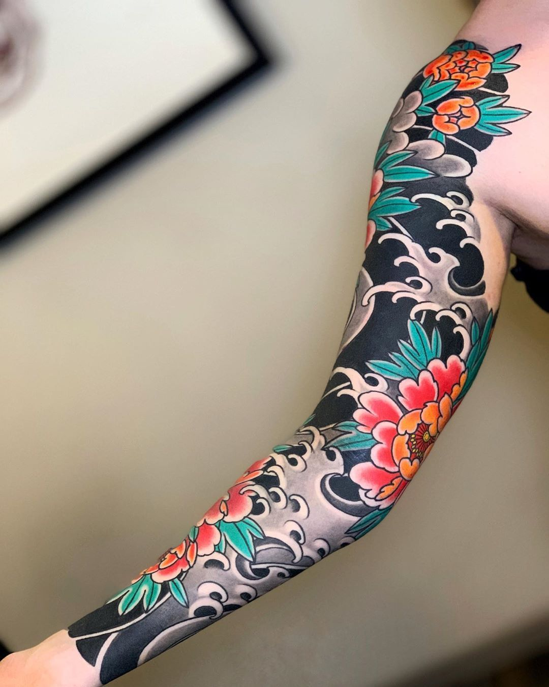
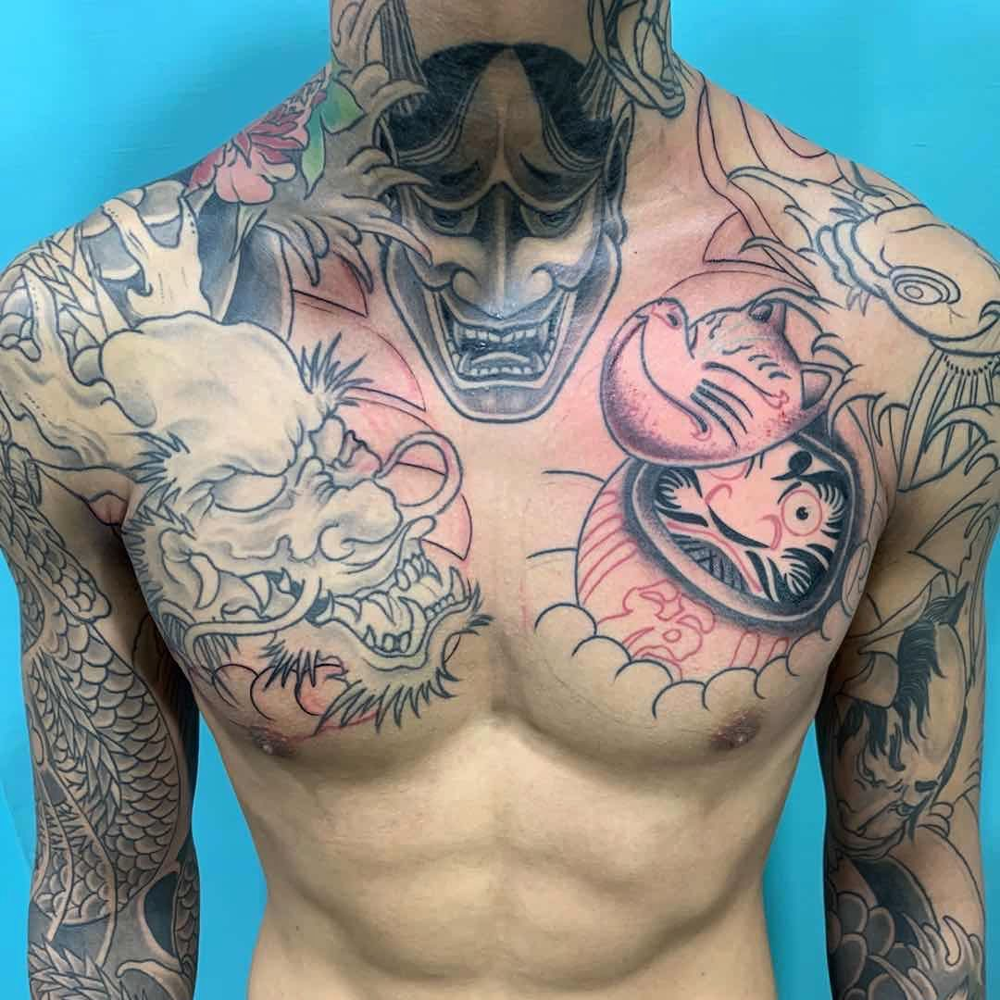

Dragon and Koi Sleeve
⋯
 @SilverSpire_Ink
@SilverSpire_Ink
Japanese
This intricate full sleeve features a powerful dragon intertwined with koi fish, symbolizing strength and perseverance. The design incorporates traditional Japanese elements including cherry blossoms and waves, creating a dynamic composition that flows naturally with the arm's contours.
This artist



